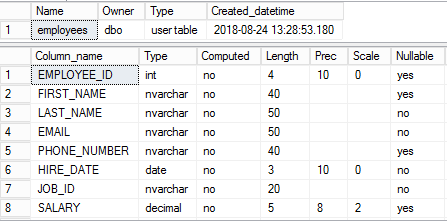
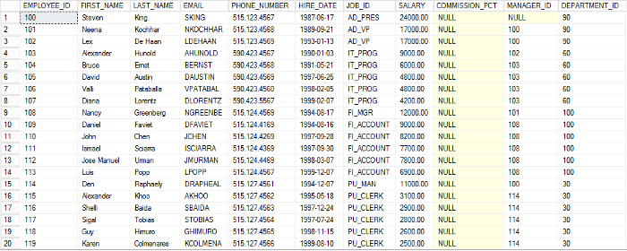
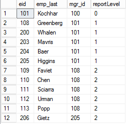

← ← ← 5/4/2022, 1:20:10 PM | Posted by: Rodrigo Nascentes
Nesse artigo gostaria de mostar um bom exemplo do uso de common table expression (CTE) usando consultas recursivas.
Dada uma tabela de empregados (employees), vamos mostrar os empregados que reportam, diretamente ou indiretamente, para o empregado 101 e seu respectivo nível de subordinação.
Estrutura da tabela employees:
Uma amostra dos dados da tabela employees:
Utilizamos a CTE a seguir para retornar os empregados que reportam, diretamente ou indiretamente, para o empregado 101 e o seu nível de subordinação.
WITH reports_to_101 (eid, emp_last, mgr_id, reportLevel) AS
(
SELECT employee_id, last_name, manager_id, 0 reportLevel
FROM employees
WHERE employee_id = 101
UNION ALL
SELECT e.employee_id, e.last_name, e.manager_id, reportLevel+1
FROM reports_to_101 r, employees e
WHERE r.eid = e.manager_id
)
SELECT eid, emp_last, mgr_id, reportLevel
FROM reports_to_101
ORDER BY reportLevel, eid;
Para CTE acima é dado o alias reports_to_101 com quatro colunas para retornar os seguintes dados do empregado: o id, o último nome, o id do gerente e o nível de subordinação. A CTE reports_to_101 possui duas definições de consultas:
Resultado final da CTE reports_to_101:
I know it's only SQL but I like it.